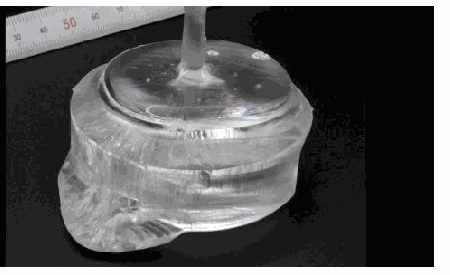

Research
Research
Our vision
Turning ultimate performance into practical technology
Compound semiconductors such as GaAs, InP, GaN, and Ga₂O₃ offer high electron mobility and wide bandgaps. By engineering heterostructures, polarization, and carriers at material interfaces, we seek high-power, high-frequency, and low-noise device performance.
01 / GaN HEMT
High-Frequency and High-Voltage Devices Based on GaN HEMTs
In AlGaN/GaN heterostructures, polarization differences induce interface charge and form a high-density two-dimensional electron gas. Its high mobility enables high-frequency amplification.
Toward high-frequency amplifiers
Toward switching devices
Toward p-type transistors and logic
We investigate threshold-voltage prediction, N-polar GaN process technology, and current-waveform analysis of current collapse to achieve both high performance and reliability.
02 / InP HEMT
Ultra-High-Frequency and Low-Noise Devices
InP-based HEMTs have room-temperature electron mobilities exceeding 10,000 cm²/Vs. We exploit their high-speed transport for millimeter-wave and terahertz amplifiers and low-noise high-frequency devices.
High-frequency and low-noise performance
High-frequency amplifiers
Quantum-computing hardware
03 / Ga₂O₃
From Ga₂O₃ Crystals to Microwave Devices
Ga₂O₃ is an ultra-wide-bandgap semiconductor.
Suitable for high-power applications
Novel growth technology developed at Tohoku University
From characterization to device applications
Using a new material technology developed by Prof. Akira Yoshikawa of the Institute for Materials Research, Tohoku University, and FOX Corporation, we aim to realize low-cost microwave transistors.

Source: Tohoku University